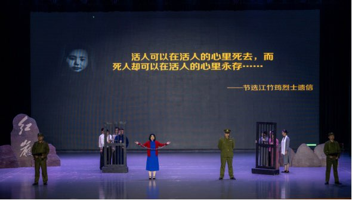
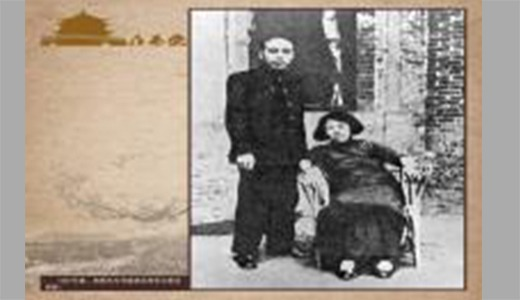
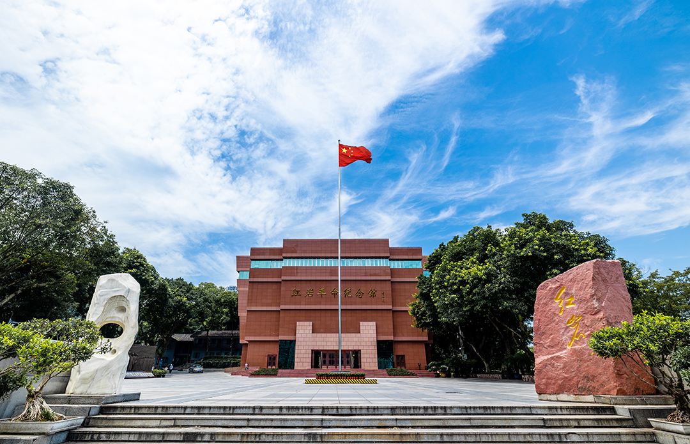
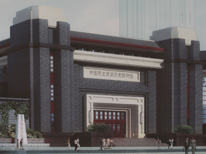
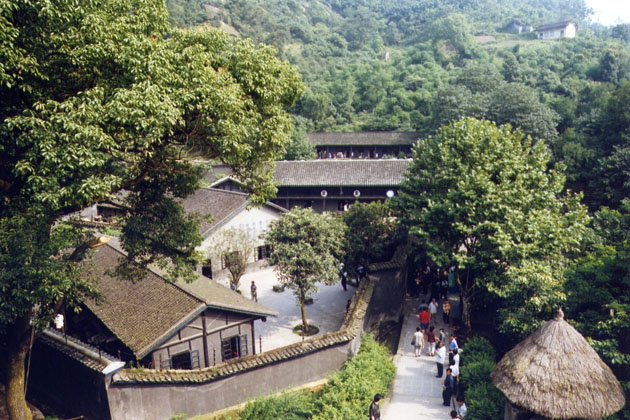
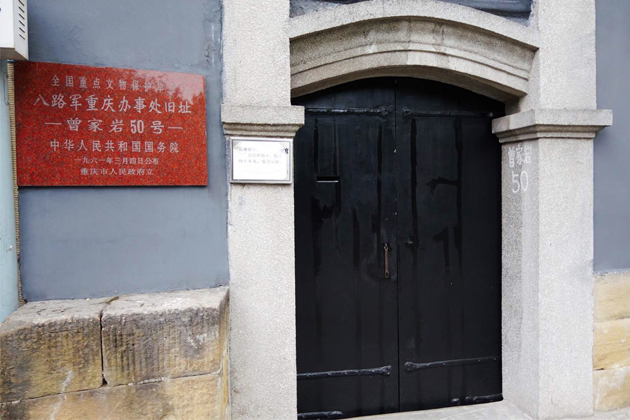
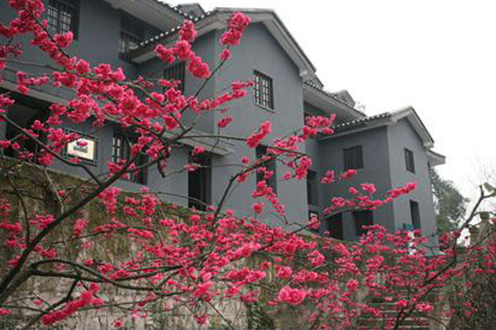
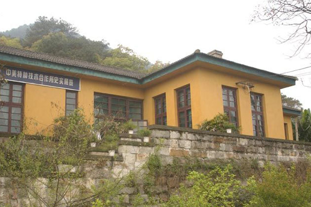
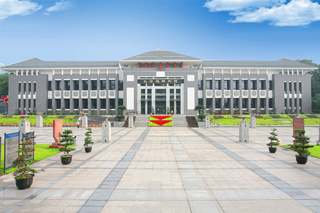
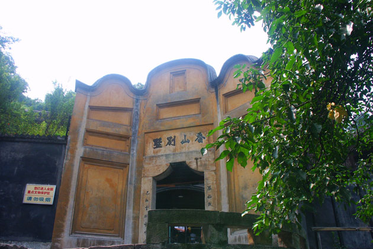

|  |
联播新闻
|
红色资源数据库 |
|||
|
张露萍 张孟晋 张兆琦 张铭新 张醒民 张国雄 |
|||||
|
里斯本丸”的最后故事 ——中国渔民二战中冒死营救英战俘 |
|||||
|
蒋介石书法欣赏 战时重庆有一股抗战曲艺潮 |
|||||
|
从毛泽东、毛岸英致亲人的两封信读懂 共产党的“人情” |
|||||
|  | 宣传去争取来 加强文物保护 传承文化历史根脉 |
||||
|
历史的脚印 童小鹏抗战史 |
统战春秋 重庆见证的岁月 |
红岩精神 千秋楷模 红岩 |
朱德诗赞狮子滩 周总理60寿辰来到龙溪河 |
||
|  |  |  |  |
| 中国民主党派陈列馆 | 曾家岩50号周公馆 | ||
| 红岩革命纪念馆 |  | 渣滓洞看守所旧址 |  |
|  |  | ||
| 红岩魂陈列馆 | 中共中央暨八路军驻重庆办事处旧址 | 白公馆旧址 | 梅园 |